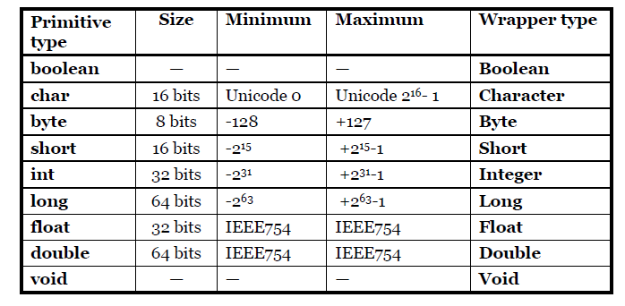

2.1 用引用操作对象
尽管一切都看做对象，但是操纵的标识符实际上是对象的一个“引用”(reference)。可以将这个情形看做是遥控器（引用）来操纵电视机（对象）
一种安全的做法是，创建一个引用的同时就对其进行初始化。String s = “hello”;
2.2 必须由你创建所有对象
String s = new String(“hello”);
一旦创建了一个引用，就能与一个对象相关联。
2.2.1 存储到什么地方
程序运行时候有五个地方可以存储数据：
寄存器：处理器内部，最快的存储区，数量极其有限
堆栈：位于通用RAM，通过堆栈指针来分配和释放内存，速度仅次于寄存器。灵活性受限（必须知道存储其中的对象的确切生命周期）。对象引用存于此处。
堆：一种通用内存池，也位于RAM。灵活性大，分配与清理耗时，所有的Java对象存储于此。
常量存储：存放在程序内部，在嵌入式系统中，可以选择将其存放于ROM中。
非RAM存储：数据在程序没有运行时也可以存在，两个典型的例子就是流对象和持久化对象
2.2.2 特例：基本类型
基本类型不需要new来创建对象，而是创建一个并非是引用的“自动”变量。这个变量直接存储值，并置于堆栈中。
Java中，没有无符号数，基本类型占用空间的大小也不会像其它语言随机器硬件架构变化。→（更具有可移植性）

Java 每种基本类型都提供了包装器类型。同时提供了两个用于高精度计算的类：BigInteger（任意精度的整数）和BigDecimal（任意精度的定点数）。
2.2.3 Java中的数组
C和C++的数组就是内存块，访问很危险
Java则会确保数组会被初始化，而且不能再范围外访问。但是增加了检查开销。
Java中创建数组对象时，实际上就是创建引用数组（数组对象是由java虚拟机创建的），且每个引用都会自动被初始化为一个特定值（null）。编译器会把基本类型数组的内存全部置零。
2.3 永远不需要销毁对象
2.3.1 作用域
以花括号为例，说明与C、C++的作用域区别：
2.3.2 对象的作用域
Java使用new创建的对象可以存活于作用域之外
上面例子中，引用s在作用域终点就消失了，s指向的String对象仍继续占用内存空间。
Java有一个垃圾回收器，用于监视new创建的所有对象，并辨别不再被引用的对象。
2.4 创建新的数据类型：类
在Java中，所做的全部工作就是：定义类、产生类对象、发送消息给类对象。类中有两种类型的元素：字段（或数据成员）和方法（或成员函数）。
当变量成为类的字段使用时，Java确保给定其默认值（内存中填0），以确保其得到初始化（C++无此功能），对于局部变量，不做初始化，可能是任意值。
2.5 方法、参数和返回值
方法：做某些事情的方式。基本组成包括：名称、参数、返回值和方法体。其中方法名和参数列表（参数类型及参数顺序），合起来称为“方法签名”，唯一标识出某个方法。
Java中的方法只能作为类的一部分来进行创建。方法只能通过对象才能被调用。
Java在参数列表中必须指定每个所传递对象的类型和名字。
关于方法的参数传递，这是一个被争议的话题。
• 先说说参数传递的几个术语：
值调用(call by vale):表示方法接收的是调用者传递的值。
引用调用(call by reference):表示方法接收的是调用者传递的变量地址。
一个方法可以修改传递引用所对应的变量值，而不能修改传递值调用所对应的变量值；
JAVA语言总是采用值调用，也就是说，JAVA方法得到的是所有参数值的一个拷贝，方法不能修改传递给他的任何参数变量的内容。
例如：
通过以上实例,可以看出基本类型参数传递的是变量值的拷贝，对象参数传递的是对象引用的拷贝,对象引用及其他的拷贝同时引用同一个对象。
很多程序语言提供两种传递方式:值传递和引用传递(C++和Pascal)。有些程序员认为java语言对对象参数传递也是用的引用调用。实际上是理解错误，这种错误具有一定的普遍性。
上例中swap方法并没有改变存储在变量sax和say中的对象引用。swap方法的参数a和b被初始化为两个对象引用的拷贝，这个方法交换的是这两个拷贝。在方法结束时，参数变量a和b被丢弃了。原来的变量sax和say仍然引用这个方法调用之前所引用的对象。
这个过程说明：java语言对对象采用的不是引用调用，实际上对象引用进行的是值传递。
最后总结一下在JAVA中，方法参数的使用情况：
•一个方法不能修改一个基本数据类型的参数；
•一个方法可以改变一个对象参数的状态（属性）；
•一个方法不能实现让对象参数引用一个新对象；
C++有值调用和引用调用。引用参数标有&符号。例如，void swap(int& a,int& b)。引用即可以当做变量的一个别名，仅此而已。而Java的引用，如果理解为像指针一样存的是对象地址，传递时都会把它拷贝一份，这样可能会好理解些。
2.6 构建一个Java程序
2.6.1名字可见性
为了解决命名冲突，Java程序员使用反写Internet域名来确保名字的独一无二。如：net.mindview.utility.foibles
2.6.2 运用其他构件
想使用其他文件定义好的类，可以使用import。
2.6.3 static关键字
static解决的两个需求：
（1） 只想为某特定域分配单一的存储空间，而不去考虑究竟要创建多少对象。
（2） 即使没有创建对象，也能调用这个方法
即使从未创建某个类的任何对象，也可以调用其static方法或访问static域。
对于static方法，不能简单地通过调用其它非static域或方法而没有指定某个命名对象，来直接访问非static域或方法。普通方法可以直接使用static域或方法。
使用类名是引用static变量的首选方法。
语法形式为ClassName.method();
2.7 Java的第一个程序
一个独立运行的程序，文件中必须存在某个类与该文件同名，并且那个类必须包含一个名为main()的方法（事实上Java允许文件名和文件中的类不同命，但是类不能是public的）。
public static void main(String[] args){…}中args用来存储命令行参数。
2.8注释和嵌入式文档
javadoc
- 只能为public和protected成员进行文档注释。
- 不要在嵌入式html中使用标题标签<h1><hr>等。因为javadoc会插入这类标签，避免冲突。
- 一些标签示例
• @see：引用其他类
该标签允许用户引用其他类的文档 @see classname
• {@link package.class#member label}
该标签与@see相似，只是它用于行内
• {@docRoot}
该标签产生到文档根目录的相对路径，用于文档树页面的显式超链接
• {@inheritDoc}
该标签从当前这个类的最直接的基类中继承相关文档到当前的文档注释中
• @version
• @author
• @since
该标签允许你指定程序代码最早的使用版本
• @param
该标签用于方法文档中
• @return
• @throws
• @deprecated
该标签用于指出一些旧特性已由改进的新特性所取代，建议用户不要再使用这些旧特性，因为在不久的将来它们很可能会被删除2.9 编码风格
驼峰风格：
类名的首字母大写；如果类名由几个单词构成，那么把它们并在一起，其中每个内部单词的首字母都采用大写形式。如：AllTheColorsOfRainbow
几乎其他所有内容－－方法、字段（成员变量）以及对象引用名称等，公认的风格与类的风格一样，只是标识符的第一个字母采用小写。如：allTheColorsOfRainbow